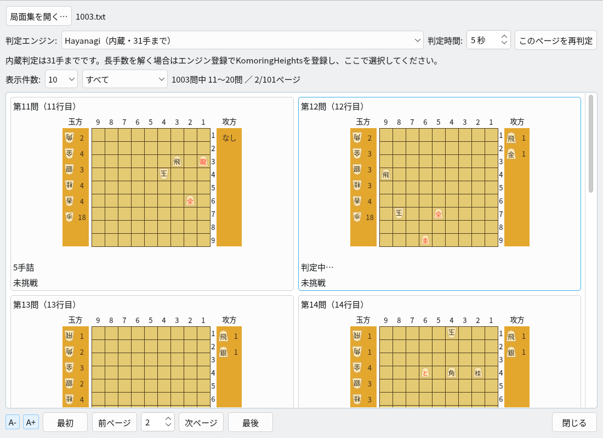
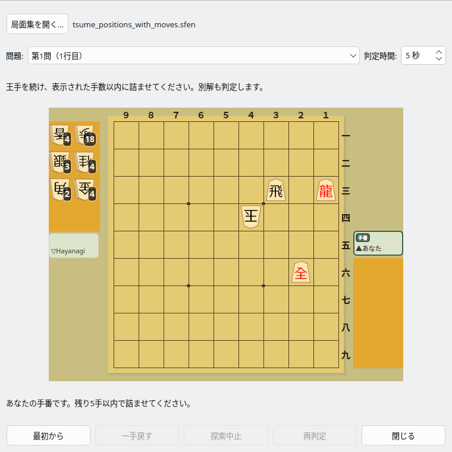
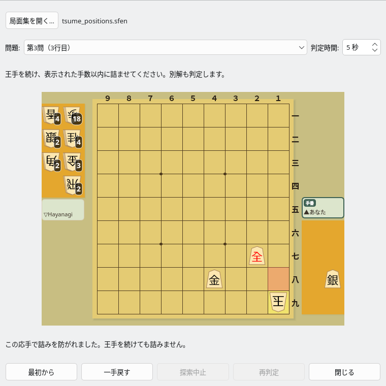
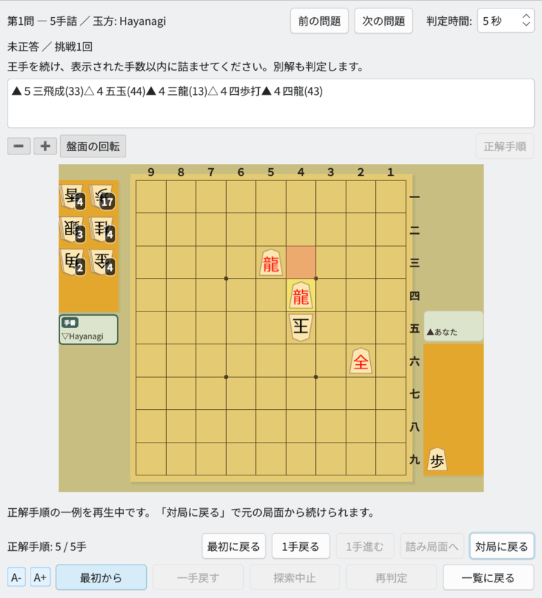

詰将棋対局
問題を選び、盤上で解き、手順を振り返る
初期盤面を見て問題を選ぶ
多数の問題もページごとに閲覧できます
局面集を開く
メニューの「対局」→「詰将棋対局…」を選ぶと、「詰将棋の問題一覧」が開きます。「局面集を開く…」で、1行に1局面のSFENが書かれたテキストファイルを選択してください。
詰将棋局面生成で保存した局面集を利用できます。初期局面だけのファイルにも、参考手順付きのファイルにも対応しています。詰み手数は局面を解析して確認するため、ファイル名や参考手順の長さだけで決めることはありません。
初期配置・手数・履歴を確認する
各問題のカードに、初期盤面と持駒、問題番号、詰み手数、挑戦状況が表示されます。表示件数は10・20・50・100件から選べます。「前ページ」「次ページ」やページ番号で移動するので、1000問の局面集でも少しずつ選べます。
「すべて」「未挑戦」「挑戦済み・未正答」「正答済み」で絞り込み、練習したい問題を探せます。問題のカードをクリックすると対局画面に進みます。

問題一覧：初期配置と詰み手数を見ながら、挑戦する問題を選択
判定エンジンと判定時間を選ぶ
内蔵のHayanagiなら、追加のエンジン登録なしで利用できます。初期局面の詰み判定は31手までです。長手数の問題には、komori-n氏が開発・公開している詰将棋エンジンKomoringHeightsを別途用意し、「設定」→「エンジン設定…」で登録して、問題一覧の「判定エンジン」で選択してください。登録の操作はエンジン登録のガイドで確認できます。
KomoringHeightsを選んだ場合も、玉方として応手を指すのはHayanagiです。KomoringHeightsは詰みの判定に使います。101手などの長手数も対象にできますが、制限時間内に判定できることが必要です。
「判定時間」は1〜600秒で指定できます。時間切れなどで「判定不能」になった場合は、時間を増やして「このページを再判定」を押してください。不詰が確認された問題は対局を開始できません。
Hayanagiを玉方として盤上で解く
王手を続け、表示された手数以内に詰ませます
攻方の駒を動かす
ユーザーが攻方を担当します。駒と移動先を順にクリックするか、駒をドラッグして指してください。持駒を打つ操作や、成り・不成の選択もできます。正しい王手を指すと玉方が応手を指し、あなたの次の手番になります。
参考手順と一致するかだけでなく、表示された残り手数以内に詰ませられるかを判定します。成立する別解も正解として扱います。

対局画面：攻方はあなた、玉方はHayanagi。残り手数を確認しながら着手
逃れの応手を見て考え直す
詰みを逃す王手を指すと、玉方が詰みを防ぐ応手を盤上で指します。応手を確認できるよう、約1秒後に結果を表示します。完全に詰まない場合と、残り手数以内では詰まない場合を区別して知らせます。
「一手戻す」で自分の直前の着手前に戻り、別の手を試せます。王手にならない手や反則手は受け付けません。探索が時間切れになった場合は不正解と決めず、「再判定」で調べ直せます。

逃れの応手と判定結果を確認し、一手戻して再挑戦
| 操作 | できること |
|---|---|
| 最初から | 初期局面に戻り、新しい挑戦を始めます。 |
| 一手戻す | 自分の直前の着手前に戻します。 |
| 探索中止・再判定 | 探索を中止したり、判定時間を増やして調べ直したりできます。 |
| 一覧に戻る | 問題一覧の元のページと絞り込み条件に戻ります。 |
正解手順を1手ずつ再生する
解き方を確認してから、途中の対局に戻れます
「正解手順」ボタンを押すと、盤の上に日本語の棋譜、盤の下に再生ボタンが現れます。検証した正解手順の一例を初期局面から確認できます。長い棋譜はスクロールして読むことができ、コピーも可能です。

正解手順：棋譜と盤面を照らし合わせ、攻方・玉方の各手を再生
| 再生ボタン | 操作 |
|---|---|
| 最初に戻る | 正解手順の初期局面を表示します。 |
| 1手戻る・1手進む | 攻方・玉方の手を1手ずつ戻したり進めたりします。 |
| 詰み局面へ | 手順の最後の局面を表示します。 |
| 対局に戻る | 棋譜と再生ボタンを隠し、再生前の対局局面から続けます。 |
手順の再生中は盤面を閲覧するだけになり、駒を動かして対局を進めることはできません。再生するだけでは挑戦回数・正答回数は増えません。手順の取得に時間がかかる場合は「探索中止」や「対局に戻る」で中断できます。
挑戦履歴を残して繰り返し練習
未挑戦の問題も、以前解いた問題も探せます
- 挑戦回数・正答回数・最終挑戦日時・最終正答日時を保存します。アプリを閉じたあとも履歴が残ります。
- 一覧を眺めたり、自動判定を待ったりするだけでは挑戦回数は増えません。対局画面で指せる状態になると1回の挑戦として記録します。
- 以前正答した問題を再挑戦して失敗・中断しても、過去の正答済み状態は残ります。
- 同じ局面なら、ファイル名や保存場所が変わっても履歴を引き継ぎます。
履歴はShogiBoardQの設定ファイルとは別のデータベースに保存します。配布版では、履歴保存のためにSQLiteを別途インストールする必要はありません。